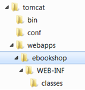
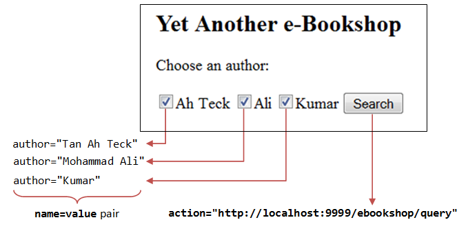
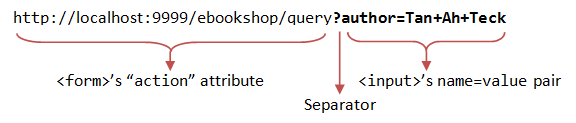
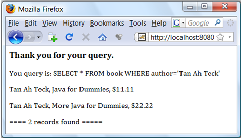
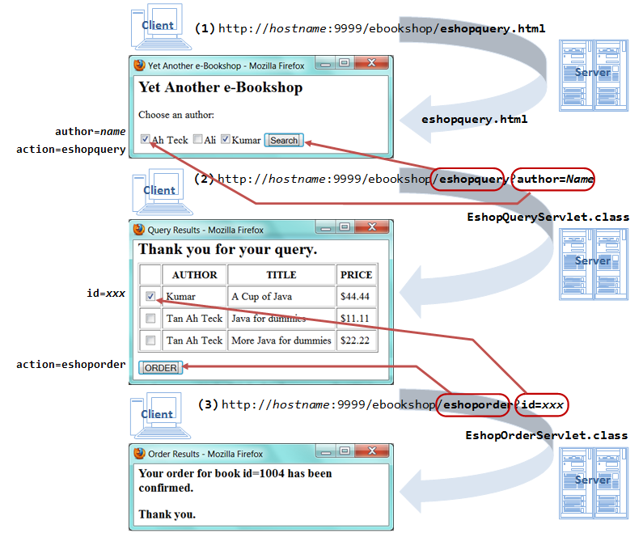
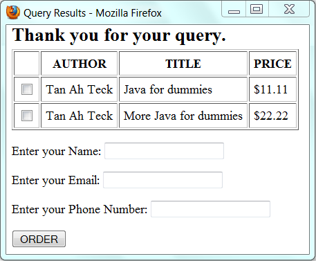

Introduction
In this case study, we shall develop an e-shop based on the "Java Servlet" (now "Jakarta Servlet") Technology. This e-shop is a typical Internet business-to-consumer (B2C) 3-tier client/server database application, as illustrated below.

A typical 3-tier client/server web database application consists of 5 components:
- A HTTP Server (or commonly known as a Web Server), such as Apache HTTP Server, Apache Tomcat Server, Microsoft Internet Information Server (IIS), Nginx, Google Web Server (GWS), and etc..
- A HTTP Client, commonly known as a Web Browser, such as FireFox, Chrome, MSIE, Safari, and etc.
- A Relational Database, such as MySQL, PostgreSQL, Oracle, IBM DB2, MS SQL Server, MS Access, SAP SyBase, and etc.
- Client-side program, running inside the browser, which sends request to the server and receives server's response. Client-side program can be written in many technologies, e.g., HTML form, JavaScript, VBScript, and others.
- Server-side program, running inside the HTTP server, which receives and processes clients' requests. The server-side program extracts the query parameters submitted by the client-side program and queries the database. Server-side program can also be written in many ways, e.g., Java Servlet/JSP/JSF, ASP, PHP, Python, JavaScript, and others.
The client and server interact with each other by exchanging messages using a protocol called HTTP (HyperText Transfer Protocol). HTTP is an asymmetric request-response protocol. A client sends a request message to the server. The server processes the request and returns a response message. In other words, in HTTP, the client pulls information from the server, instead of server pushes information to the client. An HTTP server typically runs over TCP/IP, with a server IP address and on a TCP port number. The default TCP port number for HTTP is 80.
A typical Use Case for a webapp is as follows:
- A client issues an URL to request and download an HTML page containing an HTML form (or some client-side programs).
- The client enters the requested data into the form (such as search criteria), and submits these query parameters back to a server-side program for processing.
- The server-side program extracts the query parameters, performs the database query, and returns the query results back to the requesting client.
- The client displays the query results, and repeats the above steps for further request-response exchange.
In this article, we shall build our webapp in Java and MySQL. We shall write our server-side programs in Java servlets. We shall write our client-side programs in HTML forms.
Setting up the E-Shop's Database in MySQL
The first step in building our e-shop is to setup a database. We shall call our database "ebookshop" which contains one table "books". The table "books" has 5 columns: id, title, author, price and qty. The id column is the primary key (PK) (having unique value) of the table.
Database: ebookshop Table: books +-------+----------------------------+---------------+---------+-------+ | id | title | author | price | qty | | (INT) | (VARCHAR(50)) | (VARCHAR(50)) | (FLOAT) | (INT) | +-------+----------------------------+---------------+---------+-------+ | 1001 | Java for dummies | Tan Ah Teck | 11.11 | 11 | | 1002 | More Java for dummies | Tan Ah Teck | 22.22 | 22 | | 1003 | More Java for more dummies | Mohammad Ali | 33.33 | 33 | | 1004 | A Cup of Java | Kumar | 44.44 | 44 | | 1005 | A Teaspoon of Java | Kevin Jones | 55.55 | 55 | +-------+----------------------------+---------------+---------+-------+
MySQL
If you are new to MySQL, read "How to Set Up MySQL and Get Started".
Start the MySQL server. Take note of the server's TCP port number. I shall assume that MySQL server is running on port 3306, which is the default TCP port number for MySQL server.
// For Windows: assume that MySQL is installed in "c:\myWebProject\mysql" c: cd \myWebProject\mysql\bin mysqld --console // For macOS // Use graphical control at "System Preferences" -> MySQL
Start a MySQL client. I shall also assume that there is an authorized user called "myuser" with password "xxxx".
// For Windows: assume that MySQL is installed in "c:\myWebProject\mysql" c: cd \myWebProject\mysql\bin mysql -u myuser -p // For macOS: assume that MySQL is installed in "/usr/local/mysql" cd /usr/local/mysql/bin ./mysql -u myuser -p
You can run the following SQL script to set up the database:
create database if not exists ebookshop; use ebookshop; drop table if exists books; create table books ( id int, title varchar(50), author varchar(50), price float, qty int, primary key (id)); insert into books values (1001, 'Java for dummies', 'Tan Ah Teck', 11.11, 11); insert into books values (1002, 'More Java for dummies', 'Tan Ah Teck', 22.22, 22); insert into books values (1003, 'More Java for more dummies', 'Mohammad Ali', 33.33, 33); insert into books values (1004, 'A Cup of Java', 'Kumar', 44.44, 44); insert into books values (1005, 'A Teaspoon of Java', 'Kevin Jones', 55.55, 55); select * from books;
Setting up HTTP Server with Apache Tomcat
Next, we have to setup an HTTP server to host our webapp. In this case study, we shall use Apache Tomcat Server as our HTTP server. Read "How to install Apache Tomcat server". I shall assume that our Tomcat is running in TCP port number 9999.
Setting up the e-Shop Webapp under Apache Tomcat
Step 1: Create the Directory Structure for a new Webapp "ebookshop"

First of all, choose a name for your webapp. In this case study, we shall call it "ebookshop". Navigate to Tomcat's "webapps" sub-directory, and create the following directory structure:
- Under Tomcat's "
webapps" directory, create you web application root directory "ebookshop". - Under "
ebookshop", create a sub-directory "WEB-INF" (case sensitive, uppercase, a dash not underscore). - Under "
WEB-INF", create a sub-sub-directory "classes" (case sensitive, lowercase, plural).
You need to keep your web resources in the proper directories:
- "
ebookshop": The is called the context root (or document base directory) of your webapp. You should keep all your HTML files and resources visible to the web users (e.g., CSS, images, scripts) here. - "
ebookshop\WEB-INF": This directory, although under the context root, is not visible to the web users. This is where you keep your application's configuration files "web.xml". - "
ebookshop\WEB-INF\classes": This is where you keep all the Java classes.
Step 2: Start the Tomcat Server
To start the Tomcat server:
- For Windows: start a CMD shell and run the batch file "
startup.bat" under Tomcat's "bin" directory. Tomcat will be started in a new console window. - For macOS and Linux: start a Terminal and run "
./catalina.sh run" under Tomcat's "bin" directory.
Monitor the Tomcat console, because the error messages, and output of System.out.println() from your programs will be sent to this console. Check the Tomcat's HTTP TCP port number.
..... xxxxxx INFO [main] org.apache.catalina.startup.HostConfig.deployDirectory Deploying web application directory [xxx\webapps\ebookshop] xxxxxx INFO [main] org.apache.catalina.startup.HostConfig.deployDirectory Deployment of web application directory [xxx\webapps\ebookshop] has finished in [188] ms ...... xxxxxx INFO [main] org.apache.coyote.AbstractProtocol.start Starting ProtocolHandler ["http-nio-9999"] xxxxxx INFO [main] org.apache.coyote.AbstractProtocol.start Starting ProtocolHandler ["ajp-nio-8009"] xxxxxx INFO [main] org.apache.catalina.startup.Catalina.start Server startup in 1927 ms
Step 3: Access the Tomcat HTTP Server
The Tomcat HTTP Server has been started on TCP port 9999. The default TCP port number for HTTP is 80. To access an HTTP server NOT running on the default TCP port 80, the port number must be explicitly specified in the URL in the form of host:port.
To access your Tomcat Server, start a web browser (e.g., FireFox, IE, Chrome, Safari, Edge) and issue the following URL:
http://localhost:9999
The "localhost" is a special hostname (with IP address of 127.0.0.1) meant for local loop-back testing.
You could also use the IP address to access your HTTP server. You can find out your IP address by running commands such as "ipconfig", "winipcfg" (Windows in CMD), "ifconfig" (macOS/Linux in Terminal).
You shall see the welcome page of Tomcat Server.

Step 5: Shutting down the Tomcat Server.
To orderly shutdown the Tomcat web server, press Ctrl-C from the Tomcat's console; or run the script "shutdown.bat" (Windows) or "./shutdown.sh" (macOS/Linux) under Tomcat's "bin" directory.
Writing Client-side HTML Form (querybook.html)
Let's write an HTML script to create a query form using checkboxes. Save the HTML file as "querybook.html" in your application root directory "ebookshop".
<!DOCTYPE html> <html> <head> <title>Yet Another e-Bookshop</title> </head> <body> <h2>Yet Another e-Bookshop</h2> <form method="get" action="http://localhost:9999/ebookshop/query"> Choose an author:<br /><br /> <input type="checkbox" name="author" value="Tan Ah Teck" />Ah Teck <input type="checkbox" name="author" value="Mohammad Ali" />Ali <input type="checkbox" name="author" value="Kumar" />Kumar <input type="submit" value="Search" /> </form> </body> </html>
Browse the HTML page by issuing the URL:
http://localhost:9999/ebookshop/querybook.html
Check a box (e.g., Ah Teck) and click the "Search" button. A request will be issued to the URL specified in the <form>'s action attribute. You are expected to receive an Error "404 Page Not Found" at this stage as you have yet to write the server-side program (i.e., "query").
But observe the URL generated:

The query parameter, in the form of name=value pair, are extracted from the <input> tag (e.g., author=Tan+Ah+Tack). It is appended behind the URL, separated by a '?'.
Check two boxes (e.g., "Ah Teck" and "Ali") and submit the request, the URL is:
http://localhost:9999/ebookshop/query?author=Tan+Ah+Teck&author=Mohammad+Ali
Two name=value pairs are sent to the server, separated by an '&'.
Also take note that blank is replaced by '+'. This is because special characters are not permitted in the URL. They are encoded as %xx where xx is the hex code in ASCII. For example, '~' is encoded as %7e; blank is encoded as %20 or '+'.
Writing Server-side Java Database Query Servlet (QueryServlet.java)
The next step is to write the server-side program, which responses to the client's request by querying the database and returns the query results. We shall use Java servlet technology in our servlet-side programming.
Java Database Programming
The steps involved in Java database programs are:
- Allocate a
Connectionobject. - Allocate a
Statementobject, under theConnectionobject created. - Query database:
- Execute a SQL
SELECTquery by calling theexecuteQuery()method of theStatementobject, which returns the query results in aResultSetobject; or - Execute a SQL
INSERT|UPDATE|DELETEcommand by calling theexecuteUpdate()method of theStatementobject, which returns anintindicating the number of rows affected.
- Execute a SQL
- Process the query result.
- Free the resources by closing the
StatementandConnection.
Java Database Servlet
Let write a servlet that queries the database based on the client's request.
Step 1: Write the Servlet "QueryServlet.java"
Enter the following codes and save as "QueryServlet.java" under your web application "classes" directory, i.e., "ebookshop\WEB-INF\classes\". You must keep all your servlets in "ebookshop\WEB-INF\classes", because that is where Tomcat picks up the servlets.
// To save as "ebookshop\WEB-INF\classes\QueryServlet.java".
import java.io.*;
import java.sql.*;
import jakarta.servlet.*; // Tomcat 10 (Jakarta EE 9)
import jakarta.servlet.http.*;
import jakarta.servlet.annotation.*;
//import javax.servlet.*; // Tomcat 9 (Java EE 8 / Jakarta EE 8)
//import javax.servlet.http.*;
//import javax.servlet.annotation.*;
@WebServlet("/query") // Configure the request URL for this servlet (Tomcat 7/Servlet 3.0 upwards)
public class QueryServlet extends HttpServlet {
// The doGet() runs once per HTTP GET request to this servlet.
@Override
public void doGet(HttpServletRequest request, HttpServletResponse response)
throws ServletException, IOException {
// Set the MIME type for the response message
response.setContentType("text/html");
// Get a output writer to write the response message into the network socket
PrintWriter out = response.getWriter();
// Print an HTML page as the output of the query
out.println("<!DOCTYPE html>");
out.println("<html>");
out.println("<head><title>Query Response</title></head>");
out.println("<body>");
try (
// Step 1: Allocate a database 'Connection' object
Connection conn = DriverManager.getConnection(
"jdbc:mysql://localhost:3306/ebookshop?allowPublicKeyRetrieval=true&useSSL=false&serverTimezone=UTC",
"myuser", "xxxx"); // For MySQL
// The format is: "jdbc:mysql://hostname:port/databaseName", "username", "password"
// Step 2: Allocate a 'Statement' object in the Connection
Statement stmt = conn.createStatement();
) {
// Step 3: Execute a SQL SELECT query
// === Form the SQL command - BEGIN ===
String sqlStr = "select * from books where author = "
+ "'" + request.getParameter("author") + "'" // Single-quote SQL string
+ " and qty > 0 order by price desc";
// === Form the SQL command - END ===
out.println("<h3>Thank you for your query.</h3>");
out.println("<p>Your SQL statement is: " + sqlStr + "</p>"); // Echo for debugging
ResultSet rset = stmt.executeQuery(sqlStr); // Send the query to the server
// Step 4: Process the query result set
int count = 0;
while(rset.next()) {
// Print a paragraph <p>...</p> for each record
out.println("<p>" + rset.getString("author")
+ ", " + rset.getString("title")
+ ", $" + rset.getDouble("price") + "</p>");
count++;
}
out.println("<p>==== " + count + " records found =====</p>");
// === Step 4 ends HERE - Do NOT delete the following codes ===
} catch(SQLException ex) {
out.println("<p>Error: " + ex.getMessage() + "</p>");
out.println("<p>Check Tomcat console for details.</p>");
ex.printStackTrace();
} // Step 5: Close conn and stmt - Done automatically by try-with-resources (JDK 7)
out.println("</body></html>");
out.close();
}
}Recall that the HTML form that we created earlier submits query parameters in the form of name=value pairs, (e.g., author=Tan+Ah+Teck), as part of the request. In the processing servlet, we need to extract the author name (e.g., "Tan Ah Teck") from the request to form a SQL SELECT query (e.g., SELECT * FROM books WHERE author='Tan Ah Teck'). This is done via the method request.getParameter(name), which returns the value of the name=value pair.
For example, suppose that the URL is:
http://localhost:9999/ebookshop/query?author=Tan+Ah+Teck
The method request.getParameter("author") returns a String "Tan Ah Teck". The resultant sqlStr becomes:
SELECT * FROM books WHERE author='Tan Ah Teck' AND qty > 0 ORDER BY author ASC, title ASC
Note that you do not have to handle encoded characters such as '+', %20, '?' and '&'. They will be properly decoded by the getParameter() method.
Step 2: Compile
Compile the source code "QueryServlet.java" into "QueryServlet.class".
// For Windows: Assume that Tomcat is installed in "c:\myWebProject\tomcat" c: cd \myWebProject\tomcat\webapps\ebookshop\WEB-INF\classes javac -cp .;c:\myWebProject\tomcat\lib\servlet-api.jar QueryServlet.java // For macOS: Assume that Tomcat is installed in "~/myWebProject/tomcat" cd ~/myWebProject/tomcat/webapps/ebookshop/WEB-INF/classes // Need to use $HOME instead of ~ in the "javac" command javac -cp .:$HOME/myWebProject/tomcat/lib/servlet-api.jar QueryServlet.java
Step 3: Test the Servlet
You can now try to invoke the servlet by issuing a request URL with proper query parameter:
http://localhost:9999/ebookshop/query?author=Tan+Ah+Teck
The request URL "/query" is mapped to the servlet "QueryServlet.class", as configured via @WebServlet("/query"), as follows:
Try "View Source" (or "View Page Source") in your browser to study the output produced by the servlet. It is important to note that the client has no access to the servlet's program codes, but merely the outputs produced by the servlet.
<!DOCTYPE html> <html> <head><title>Query Results</title></head> <body> <h3>Thank you for your query.</h3> <p>Your SQL statement: SELECT * FROM books WHERE author = 'Tan Ah Teck' AND qty > 0 ORDER BY author ASC, title ASC</p> <p>Tan Ah Teck, Java for dummies, $11.11</p> <p>Tan Ah Teck, More Java for dummies, $22.22</p> <p>==== 2 records found ====</p> </body></html>
Step 5: Invoke the Servlet from the HTML Form
Use the HTML form that you have created earlier (i.e., "querybook.html") to trigger this servlet. Take note that the request URL is coded in the <form>'s action attribute.
More Java Database Servlets
Ex 1: Relative URL vs. Absolute URL (querybook.html)
In the "querybook.html", the request URL in the <form>'s action attribute (i.e., http://localhost:9999/ebookshop/query) is called an absolute URL. The hostname, port number and path are all hard-coded in an absolute URL. This will cause problem if you decide to relocate your program to another host (e.g., from the testing host into the production host), or another webapp.
Instead of using an absolute URL, we would use a relative URL (in "querybook.html") as follows:
<form method="get" action="query">
A relative URL is relative to the currently displayed page. Since the current page "querybook.html" is located at directory "http://localhost:9999/ebookshop/", the relative URL of "query" resolves into an absolute reference of "http://localhost:9999/ebookshop/query".
Relative URLs should be used (instead of absolute URLs) in your HTML pages whenever possible, so that the HTML pages can be easily relocated from one webapp to another webapp, or to another server, under difference base directory. You should only use absolute URL for referencing resources from other servers.
Try it out!
Use relative URL from this point onwards.
Ex 2: Multi-Value Query Parameter (QueryMultiValueServlet.java and querybookmv.html)
If you check more than one boxes in the "querybook.html", the resultant URL contains multiple author=value parameters separated by an '&'. For example, if you check all three boxes, the resultant URL is:
http://localhost:9999/ebookshop/query?author=Tan+Ah+Teck&author=Mohammad+Ali&author=Kumar
However, If you check more than one authors and submit your request to the QueryServlet, the query result shows only the first author. This is because the method request.getParameter(name) returns only the first value, if there are more than one values for that particular parameter name.
We have to use the method request.getParameterValues(name) (instead of request.getParameter(name)) to handle multi-value parameters. The request.getParameterValues(name) returns an array of String containing all the values of that parameter; whereas request.getParameter(name) returns a single String.
In the SQL SELECT command, we could use the IN predicate in the WHERE clause to select from a set of values. For example,
SELECT * FROM books WHERE author IN ('Tan Ah Teck', 'Mohammad Ali', 'Kumar')
The above SQL command is the same but simpler than:
SELECT * FROM books WHERE author='Tan Ah Teck' OR author='Mohammad Ali' OR author='Kumar'
Let us write a new servlet "QueryMultiValueServlet.java" (modified from "QueryServlet.java") to handle query parameter with multiple values. We shall map this new servlet "QueryMultiValueServlet.class" to request URL "/querymv". We shall also create a new HTML page (called "querybookmv.html") to trigger URL "/querymv". For example, if all the three checkboxes are checked, the URL triggered shall be:
http://localhost:9999/ebookshop/querymv?author=Tan+Ah+Teck&author=Mohammad+Ali&author=Kumar
Step 1: Write the "QueryMultiValueServlet.java"
Copy "QueryServlet.java" to "QueryMultiValueServlet.java".
- Change the classname from
QueryServlettoQueryMultiValueServlet. - Change the request URL to "
/querymv" in@WebServlet()at Line 8. - We can include all the selected authors in the servlet's
sqlstras follows:// Step 3: Execute a SQL SELECT query String[] authors = request.getParameterValues("author"); // Returns an array of Strings String sqlStr = "SELECT * FROM books WHERE author IN ("; for (int i = 0; i < authors.length; ++i) { if (i < authors.length - 1) { sqlStr += "'" + authors[i] + "', "; // need a commas } else { sqlStr += "'" + authors[i] + "'"; // no commas } } sqlStr += ") AND qty > 0 ORDER BY author ASC, title ASC"; - Compile the "
QueryMultiValueServlet.java" into "QueryMultiValueServlet.class". Verify that the class-file is created.
Step 2: Create a new HTML Form (querybookmv.html)
Create a new HTML form "querybookmv.html" (based on "querybook.html") to direct the action to "/querymv", as follows:
<form method="get" action="querymv"> ...... </form>
Step 3: Test Your Application
Now, you can try out the new form and new servlet.
IMPORTANT: Most browsers cache pages downloaded to improve performance. You need to refresh your page. Use Ctrl-F5 (instead of F5) to refresh, which clears the cache. You may use "view source" to check and ensure that you are working on the modified page instead of the cached page.
Step 4: More
The getParameterValues(name) returns null if the query string does not contain parameter name (i.e., the user did not check any box). This will trigger a NullPointerException in the above codes. Try it out!
You can use the following codes to check for the existence of a parameter:
// Add the following lines after
// String[] authors = request.getParameterValues("author");
if (authors == null) {
out.println("<h2>No author selected. Please go back to select author(s)</h2><body></html>");
return; // Exit doGet()
}
// Continue the exiting codes - Okay to perform the database query
......
......
Recompile the servlet, and test it with not checking any box.
Ex 3: Multiple Query Parameters (QueryMultiParamServlet.java and querybookmp.html)
Create a new servlet called "QueryMultiParamServlet.java" (based on "QueryServlet.java") to handle multiple query parameters. For example, the following URL has two parameters: author and price.
http://localhost:9999/ebookshop/querymp?author=kumar&price=50We shall configure this servlet to the request URL "
/querymp".
Step 1: HTML form (querybookmp.html)
Create a new HTML form (called "querybookmp.html"), which could submit two query parameters: author and price, using checkboxes and radio buttons respectively, as follows:
<!DOCTYPE html>
<html>
<head>
<title>Yet Another e-Bookshop</title>
</head>
<body>
<h2>Yet Another e-Bookshop</h2>
<form method="get" action="querymp">
Choose an author:
<input type="checkbox" name="author" value="Tan Ah Teck" />Ah Teck
<input type="checkbox" name="author" value="Mohammad Ali" />Ali
<input type="checkbox" name="author" value="Kumar" />Kumar
<br /><br />
Choose a price range:
<input type="radio" name="price" value="50" checked />less than $50
<input type="radio" name="price" value="100" />less than $100
<br /><br />
<input type="submit" value="Search" />
<input type="reset" value="Clear" />
</form>
</body>
</html>Note that:
- Checkboxes (can check zero or more boxes) are used for
authorand radio buttons (can check zero or one box) are used forprice. - A "
reset" button is added (<input type="reset">), which clears the inputs.
Step 2: Write the Processing Servlet (QueryMultiParamServlet.java)
Write a servlet called "QueryMultiParamServlet.java" (copy from "QueryServlet.java").
Set the URL to "/querymp" in @WebServlet().
You can form the SQL statement as follows:
// Step 3: Execute a SQL SELECT query
String sqlStr = "SELECT * FROM books WHERE author = "
+ "'" + request.getParameter("author") + "'"
+ " AND price < " + request.getParameter("price")
+ " AND qty > 0 ORDER BY author ASC, title ASC";
Note that:
- In the SQL SELECT statement,
authoris a string and must be enclosed by a pair of single quotes;priceis a number and cannot be quoted. - The
name=valuepair ofprice="50"is interpreted asprice<50in the SELECT statement.
Compile the "QueryMultiParamServlet.java" into "QueryMultiParamServlet.class".
Try out the new HTML form and the new servlet.
Ex 4: Multiple Multi-Value Parameters (Optional)
Combining Exercises 2 and 3:
- Write a servlet called "
QueryMultiParamValueServlet.java", that is capable of processing multiple authors and a single price, and map to URL "/querymvp". - Write an HTML form called "
querybookmvp.html" to trigger this servlet.
Ex 5: HTTP "POST" Request (querybookpost.html)
HTTP defines two request methods: GET and POST. We have been using GET requests thus far as specified in our <form method="get" ...>. GET request is processed by the method doGet() in our servlet. POST request, on the other hand, is processed by a doPost() method in the servlet.
Let's try out the HTTP POST request method:
- Create a new HTML form called "
querybookpost.html" (based on "querybook.html")- Change the
<form>'s attributemethod="get"tomethod="post". - Change the
<form>'sactionattribute toaction="querypost".
- Change the
- Create a new servlet called "
QueryPostServlet.java" (based on "QueryServlet.java"). Set the URL to "/querypost" in@WebServlet(). Rename the methoddoGet()todoPost(). Compile the source. - Try out the new form and new servlet.
What is the difference between GET and POST? For POST request, the query string is not shown in the URL (i.e., no "?author=Tan+Ah+Teck&..."). Instead, the query string is sent in the body of the HTTP request message. The advantages are: (a) the client will not see the strange-looking query string in the URL; (b) The GET request's query string length is limited, because it is part of the URL. POST request can send large amount of data in the body of the request message.
Same Action for doGet() and doPost()
In practice, it is common to use the same method to handle both the GET and POST requests. In this case, you could simply re-direct doPost() to doGet(). In your "QueryPostServlet.java":
- Rename
doPost()back todoGet()to handle GET request. - Write a new method
doPost()to handle POST request as follows, which invokes thedoGet(). In other words,doGet()anddoPost()do the same thing.// No change to the original doGet() @Override public void doGet(HttpServletRequest request, HttpServletResponse response) throws ServletException, IOException { ...... } // Add a new doPost() method // The new doPost() runs the doGet() too @Override public void doPost(HttpServletRequest request, HttpServletResponse response) throws ServletException, IOException { doGet(request, response); // Re-direct POST request to doGet() }
Try it out.
(Advanced) In fact, HTTP defines seven request methods, namely, GET, POST, PUT, DELETE, HEAD, OPTIONS, TRACE. You can use doXxx() inside HttpServlet to handle each of these requests.
doGet(): handles HTTPGETrequests for displaying datadoPost(): handles HTTPPOSTrequests for performing insertsdoPut(): handles HTTPPUTrequests for performing updatesdoDelete(): handles HTTPDELETErequests for performing deletionsdoHead(): handles HTTPHEADrequests for displayingGETrequest header only (without body)doOptions(): handles HTTPOPTIONSrequests for display options supporteddoTrace(): handles HTTPTRACErequests
Programming the Client-Side (Front-End)
In the previous sections, we used a simple HTML form of checkboxes. HTML also provides other input component, such as text field, radio button and pull-down menu.
HTML Form with "Pull-down Menu" (querybookmenu.html)
Create the following HTML form with a "pull-down menu" and save as "querybookmenu.html". Pull-down menu uses <select> and <option> tags. The name is specified in <select>; while the value is specified in <option>.
<!DOCTYPE html>
<html>
<head>
<title>Yet Another e-Bookshop</title>
</head>
<body>
<h2>Yet Another e-Bookshop</h2>
<form method="get" action="query">
Choose an author:
<select name="author" size="1">
<option value="Tan Ah Teck">Ah Teck</option>
<option value="Mohammad Ali">Ali</option>
<option value="Kumar">Kumar</option>
</select>
<input type="submit" value="Search" />
</form>
</body>
</html>Try out this new HTML form, which triggers URL /query (mapped to QueryServlet.java).
HTML form with Text Field (querybooktextfield.html)
Crate a new HTML form with text field (called "querybooktextfield.html"). The syntax for text field is as follow. The "name" is specified in the <input> tag; while the "value" corresponds to the user's input.
<form ......> Enter an author: <input type="text" name="author" /> ...... </form>
Try out this new HTML form.
HTML form with Text Area (querybooktextarea.html)
Text field allows you to enter a single line of text; while text area allows you to enter multiple lines. Text area uses <textarea>...</textarea> tag as follow. Write an HTML form with text area (called "querybooktextarea.html").
<form ......> <textarea name="author">Enter an author</textarea> ...... </form>
Try out this new HTML form.
Programming the Server-Side to Process Order
So far, we have tested the "query" part of the e-shop. Let us continue to allow the client to "order" items in our e-shop.
The sequence of events shall be as follow (as illustrated in the figure):
- A client issues URL
http://hostname:9999/ebookshop/eshopquery.html. The server responses with an HTML form showing the available authors. The form is to be submitted to URL "/eshopquery", which is mapped to "EshopQueryServlet.class". - The client selects the author(s) and sends the request to the "
EshopQueryServlet.class", with request parameter "author=authorName". The servlet retrieves the authors' name, queries the database, and returns a list of available books by that authors. Instead of writing a paragraph (<p>...</p>) for each book (as in the previous exercises), the servlet shall now print a checkbox for each book. This allows the client to further interact with the server. The checkboxes are enclosed within an HTML form, which is to be submitted to URL "/eshoporder" (mapped to "EshopOrderServlet.class"). - The client selects the book(s) and sends the order request to the "
EshopOrderServlet.class", with request parameter "id=xxx". The servlet retrieves the books'id, updates the database, and returns a confirmation message.
For this exercise, you need to write 3 files (1 html and 2 java) as shown in the above figure:
eshopquery.htmlEshopQueryServlet.javaEshopOrderServlet.java
Let's do it one-by-one.
Step 1: HTML form (eshopquery.html)
Create a new HTML form called eshopquery.html (based on querybook.html), with action to /eshopquery (which is supposed to trigger servlet EshopQueryServlet.class in the next step).
Step 2: Processing Servlet to display an Order Form (EshopQueryServlet.java)
The "QueryServlet" that we wrote easier returns a static HTML page, which prints a paragraph (using <p>...</p>) for each book returned. We shall modify it (called "EshopQueryServlet") to return a dynamic HTML page containing a form of checkboxes to allow the client to order books. We shall map the "EshopQueryServlet" to URL "/eshopquery".
Recall that a checkbox is produced by an <input> tag as follows:
<input type='checkbox' name='aName' value='aValue' />aLabel
We shall use the book's id as the ordering criterion. We shall choose "id=xxx" as the name=value pair of the checkbox. We shall use author, title and price as the label for the checkbox. Hence, the servlet needs to produce an <input> tag which looks like:
<input type='checkbox' name='id' value='1001' />Tan Ah Teck, Java For Dummies, $11.11
Take note that I used single-quotes (instead of double quotes) for the attribute values in the above HTML tags, as they are easier to print in println().
The EshopQueryServlet shall send the order request to another servlet called EshopOrderServlet (which shall be mapped to an URL "/eshoporder"). Hence the <form> tag shall look like:
<form method='get' action='eshoporder'> <p><input type='checkbox' name='id' value='1001' />Tan Ah Teck, Java For Dummies, $11.11</p> <p><input type='checkbox' name='id' value='1002' />.........</p> ...... </form>
The programming steps are as follows:
Write the "EshopQueryServlet.java" (based on "QueryMultiValueServlet.java"). Map to URL "/eshopquery". It shall process the ResultSet as follow, so as to generate the desired HTML <form> and <input> tags:
// Step 4: Process the query result
// Print the <form> start tag
out.println("<form method='get' action='eshoporder'>");
// For each row in ResultSet, print one checkbox inside the <form>
while(rset.next()) {
out.println("<p><input type='checkbox' name='id' value="
+ "'" + rset.getString("id") + "' />"
+ rset.getString("author") + ", "
+ rset.getString("title") + ", $"
+ rset.getString("price") + "</p>");
}
// Print the submit button and </form> end-tag
out.println("<p><input type='submit' value='ORDER' />");
out.println("</form>");
Try out the new HTML form and new servlet.
Select some books and click the "ORDER" submit button. Observe the HTTP GET request triggered. You are expected to receive a "404 File Not Found" error because you have yet to write the EshopOrderServlet.
Step 3: Processing the Order (EshopOrderServlet.java)
The submit button in the previous step invokes this URL, with possibly zero or more id's corresponding to the book(s) ordered.
http://hostname:9999/ebookshop/eshoporder?id=1001&id=1002
We shall map the request URL "/eshoporder" to a new servlet called "EshopOrderServlet".
The "EshopOrderServlet" shall process the order by:
- Retrieve the
idnumber(s) from the request. - In table
books, reduce the "qty" by 1 for that particularidnumber. To update records in the tablebooks, use an SQL UPDATE statement as follows:UPDATE books SET qty = qty – 1 WHERE id = 1001 UPDATE books SET qty = qty – 1 WHERE id = 1002
- Insert a transaction record in a new table called "
order_records".
The programming steps are as follows:
Step 3a: Create a new table called "order_records" in the same database "ebookshop" with five columns: id (int), qty_ordered (int), cust_name (String), cust_email (String) and cust_phone (String).
[Notes: You should avoid naming the table order, as it is a reserve word in SQL, which requires special handling.]
Database: ebookshop Table: order_records +-------+-------------+---------------+---------------+------------+ | id | qty_ordered | cust_name | cust_email | cust_phone | | (INT) | (INT) | (VARCHAR(30)) | (VARCHAR(30)) | CHAR(8) | +-------+-------------+---------------+---------------+------------+
You could use the following SQL script:
use ebookshop; drop table if exists order_records; create table order_records ( id int, qty_ordered int, cust_name varchar(30), cust_email varchar(30), cust_phone char(8));
(Notes) A much better design is to have a table called customers with id (primary key), name, email and phone, and include the customer's id in the above table.
Step 3b: Write the "EshopOrderServlet.java" (map to URL "/eshoporder") which retrieves the id from the request parameter "id=xxx", and updates the tables books and order_records.
The syntax for SQL INSERT is as follows:
// Insert full record INSERT INTO order_records VALUES (1001, 2, 'Kelvin Jones', 'kelvin@somewhere.com', '88881234') // Insert partial record INSERT INTO order_records (id, qty_ordered) VALUES (1001, 1)
To execute SQL UPDATE and INSERT statements, you have to use the method executeUpdate(sqlStr), which returns an int, indicating the number of rows affected by the UPDATE or INSERT. (Recall that we use executeQuery() for SQL SELECT, which returns a ResultSet). For example,
String sqlstr = "INSERT INTO order_records (id, qty_ordered) VALUES (1234, 1)"; int count; count = stmt.executeUpdate(sqlstr); out.println(count + " records inserted.");
The doGet() method of the EshopOrderServlet shall look like:
// Step 3 & 4: Execute a SQL SELECT query and Process the query result
// Retrieve the books' id. Can order more than one books.
String[] ids = request.getParameterValues("id");
if (ids != null) {
String sqlStr;
int count;
// Process each of the books
for (int i = 0; i < ids.length; ++i) {
// Update the qty of the table books
sqlStr = "UPDATE books SET qty = qty - 1 WHERE id = " + ids[i];
out.println("<p>" + sqlStr + "</p>"); // for debugging
count = stmt.executeUpdate(sqlStr);
out.println("<p>" + count + " record updated.</p>");
// Create a transaction record
sqlStr = "INSERT INTO order_records (id, qty_ordered) VALUES ("
+ ids[i] + ", 1)";
out.println("<p>" + sqlStr + "</p>"); // for debugging
count = stmt.executeUpdate(sqlStr);
out.println("<p>" + count + " record inserted.</p>");
out.println("<h3>Your order for book id=" + ids[i]
+ " has been confirmed.</h3>");
}
out.println("<h3>Thank you.<h3>");
} else { // No book selected
out.println("<h3>Please go back and select a book...</h3>");
}
Run the application. Check the database to confirm the updating. Make sure that you have the message "Thank you" displayed.
Touching Up
- Add three text fields:
cust_name,cust_emailandcust_phoneinEshopQueryServlet. The<input>tag for text fields look like:<p>Enter your Name: <input type='text' name='cust_name' /></p> <p>Enter your Email: <input type='text' name='cust_email' /></p> <p>Enter your Phone Number: <input type='text' name='cust_phone' /></p>
Thevalueof a text field is the string entered. 
You need to modifyEshopOrderServletto retrieve these new parameters (cust_name,cust_phone,cust_email) and INSERT them into theorder_recordstable. - In
EshopQueryServlet, put the rows into an HTML table (as illustrated in the above figure).
The HTML syntax for displaying a table is:<table> <tr> <th>heading for column 1</th> <th>heading for column 2</th> ...... </tr> <tr> <td>data for column 1</td> <td>data for column 2</td> ...... </tr> ...... </table>The<table>...</table>tag markups a table;<tr>...</tr>markups a row;<th>...</th>is a header cell in the row, and<td>...</td>is a data cell.
To do this, inEshopQueryServlet, you need to painfully useout.println()to print out the HTML codes line-by-line. First, print the<table>begin-tag and header-row (<tr><th>..</th></tr>). After that, in the while-loopfor processing theResultSet, print the data-row (<tr><td>...</td></tr>) inside the while-loop. Then, print the</table>end-tag after the while-loop.
I will not show you the codes!!!
What's Next
You have created an e-shop, driven by Tomcat HTTP server and a database, with Java servlet as the server-side programs and HTML form and Java Applet as the client-side programs. This e-shop, although primitive, is functional. It illustrates the principles and technologies behind a database webapp.
You can improve on:
- Database: use a comprehensive database with multiple tables (e.g.,
authors,books,writes,customers,order_details, etc.). - Client-side: use HTML 5, CSS 3, BootStrap, and JavaScript to improve on the presentation (with images, video and audio) and client-side validation.
- Server-side: provide more functions.
Some critical components are still missing in our e-shop:
- The names of authors are hard-coded in
"Eshopquerybook.html". Instead of hard-coding, write a servlet (calledEShopDisplayServlet) to generate the list of authors from the database automatically. Instead of starting with an HTML page, the webapp begins by requesting for the servlet.
Hints: Use the following SQL statement to retrieve all the distinct authors from tablebooks:SELECT DISTINCT author FROM books WHERE qty > 0
- Customer registration and sign-in.
- Input Validation (client-side and server-side), e.g., phone number (8-digit), email (xxx@yyy), name required, proper date format.
- Session Management (aka "Shopping Cart"): HTTP is a stateless protocol. It does not maintain state information across requests. That is, the 2nd HTTP request does not know what was done in the 1st request. This poses a problem for our e-shop. If a user chooses a few books over multiple requests, the books chosen in the earlier requests have to be "remembered" and placed inside a so-called "shopping cart". The user will check-out the items in the "shopping cart" after he/she finishes all his/her shopping.
- User Management: to manage users with different roles, such as customers, administrator, etc.
- Database Connection Pooling: Creating a connection for each user request is inefficient, due to the high overhead in initializing and opening the connection. We commonly set up a pool of connection known as database connection pool. A request picks up an available connection from the pool, and returns the connection to the pool after processing.
- Uploading Files.
- Deploying the Web Application
- A Secured Payment Gateway
These topics are beyond the scope of this workshop.
REFERENCES & RESOURCES
- JDK (aka Java SE) Home Page @http://www.oracle.com/technetwork/java/javase/overview/index.html.
- Apache Tomcat Home Page @ http://tomcat.apache.org.
- Java Database Connectivity (JDBC) Home Page @ http://www.oracle.com/technetwork/java/index.html.
- Java Servlets Home Page @ http://www.oracle.com/technetwork/java/javaee/servlet/index.html.
- The Java EE 6 Tutorial, Chapter 10 "Java Servlet Technology", December 2009 @ http://java.sun.com/javaee/6/docs/tutorial/doc/bnafd.html.
- White Fisher, et al., "JDBC API Tutorial and Reference", 3rd eds, Addison Wesley.
- MySQL Mother Site @ www.mysql.com, and MySQL 8.0 Reference Manual @ http://dev.mysql.com/doc/refman/8.0/en/index.html.
- Marty Hall, et al., "Core Servlets and JavaServer Pages", vol.1 (2nd eds, 2003) and vol. 2 (2nd eds, 2006), Prentice Hall.
- RFC2616 "Hypertext Transfer Protocol HTTP 1.1", World-Wide-Web Consortium (W3C), June 1999.
- "HTML 4.01 Specification", W3C Recommendation, 24 Dec 1999.